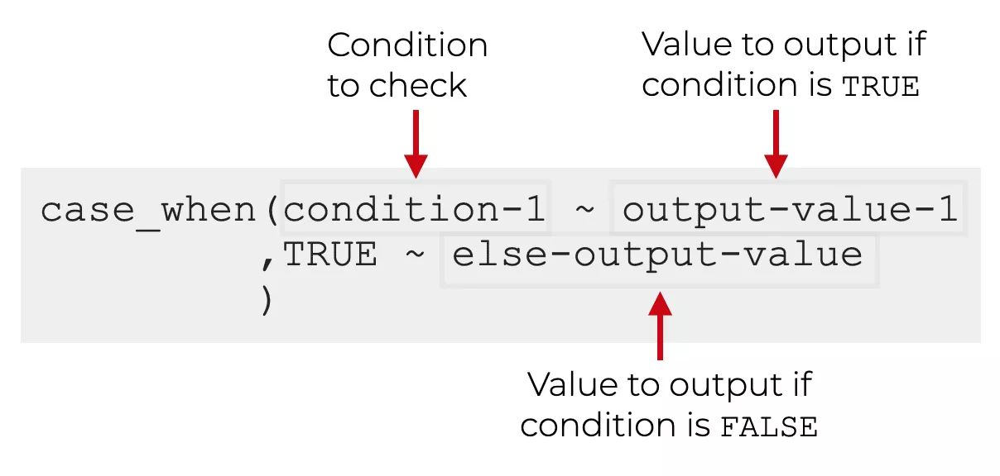
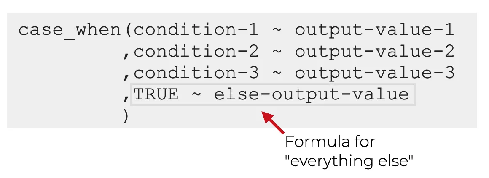

# Vektor von Zahlen darauf testen, ob sie gerade oder ungerade sind:
zahlen <- c(seq(1:10))
# Wenn die aktuelle Zahl des Vektors durch zwei geteilt keinen Rest hat, dann schreibe Gerade, ansonsten Ungerade.
ifelse(zahlen %% 2 == 0,"Gerade","Ungerade")Advanced Dplyr
1 Fortgeschrittene Dplyr Funktionen
Dplyr bietet neben dem berechnen von neuen Variablen und der Möglichkeit Datensätze effizient zusammenzufassen noch viele weitere Funktionen, die es ermöglichen tiefergehende Änderungen an einem Datensatz vorzunehmen. Dazu gehören bspw. die Funktionen case_when() und pivot_longer() bzw. pivot_wider(). Case_when() kann dazu genutzt werden, Variablen in Abhängigkeit von bestimmten Bedingungen umzuformen und wird in der Regel zusammen mit mutate() verwendet. pivot_longer() bzw. pivot_wider() wird dazu genutzt einen breiten (wide) Datensatz in einen langen (long) Datensatz umzuwandeln oder umgekehrt.
2 case_when() - if-else Verknüpfüngen für multiple Bedingungen
Die case_when Funktion in dplyr ermöglicht es, basierend auf bestimmten Bedingungen verschiedene Werte für eine Spalte in einem Datensatz auszuwählen und abhängig vom Variablenwert einen neue Variable zu erstellen. Es ist eine sehr einfache Möglichkeit, if-else Statements in eine dplyr-Pipeline zu integrieren.
Die Syntax eines case_when() Befehles entspricht einer einfachen if oder if-else Verknüpfung. Eine if-else Verknüpfung prüft eine Bedingung und führt wenn diese Erfüllt ist einen definierten Befehl aus. Ist die Bedingung nicht erfüllt, wird andernfalls (else) ein anderer Befehl ausgeführt:
case_when() funktioniert nach der Gleichen Logik:

Dabei wird immer zuerst die if-Bedinungen und deren Output definiert und anschließend mit TRUE die else Bedingung, welche angibt was passiert wenn die if - Bedingung nicht zutrifft:
zahlen <- c(seq(1:10))
# Wenn die aktuelle Zahl des Vektors durch zwei
# geteilt keinen Rest hat, dann schreibe Gerade,
# ansonsten Ungerade.
case_when(zahlen %% 2 == 0 ~ "Gerade",
TRUE ~"Ungerade")Der Unterschied von case_when() und ifelse() ist, dass mit case_when() auch mehrere Bedingungen definiert werden können (z.B. wenn eine Variable in mehrere Kategorien eingeteilt werden soll):

Hier gibt es auch ein finales else Statement, dieses muss aber nicht sein, solange die Kategorien alle Fälle abdecken!
2.0.1 case_when: Beispiele
Das folgende ist ein einfaches Beispiel, bei dem case_when() verwendet wird, um in einem Datensatz eine neue Spalte Alter_Kategorie anhand des Werts in der Spalte Alter zu kategorisieren. Wenn eine neue Spalte erstellt werden soll, muss case_when() immer mit mutate() kombiniert werden:
# Beispiel Datensatz erstellen
df <- data.frame(Name = c("Peter", "Anna", "Max"),
Alter = c(25, 35, 45))
head(df)
# mutate und case_when verwenden, um neue Variable in Abhängigkeit vom Alter zu erstellen:
df %>%
mutate(Alter_Kategorie = case_when(
Alter <= 25 ~ "jung",
Alter > 25 & Alter <= 35 ~ "mittel",
Alter > 35 ~ "alt"
))Ein weiteres Beispiel haben wir letzte Woche bei der MPT-Modellierung der Daten von Frenken et al. gesehen. Im Datensatz ist shoot als 0 und not shoot als 1 kodiert. Für die MPT Modellierung benötigen wir aber für jede Kategorie (Black / Gun, Black / Phone, White / Gun, White / Phone) die Hits und Misses, also die Fehlerraten. Der Datensatz hat praktischerweise eine Spalte, die genau kodiert, was die VP gesehen hat:
head(Study_2_dm)# A tibble: 6 × 6
subj_idx stimulus stim rt response condition
<dbl> <fct> <chr> <dbl> <int> <fct>
1 0 gun bg 0.506 0 black
2 0 phone wp 0.437 0 white
3 0 phone wp 0.483 0 white
4 0 phone bp 0.594 1 black
5 0 phone wp 0.552 1 white
6 0 gun wg 0.417 1 white In der zweiten Spalte stimulus ist angebenen, welches Objekt der jeweils zusammen mit der Hautfarbe gezeigt wurde. Da wir wissen, dass nur bei “gun” geschossen werden darf, können wir nun in Kombination mit response (0 - shoot, 1 - not shoot) die Hits mit case_when() in einer neuen Spalte ACC kodieren.
Dazu Verknüpfen wir hier zwei Bedingungen mit dem & Operator. Die erste Bedingung bezieht sich auf die Spalte stimulus, hier muss geprüft werden, welcher Stimulus gezeigt wurde (Gun vs. Phone). Die zweite Bedingung bezieht sich auf die Spalte response. Hier muss geprüft werden, ob geschossen wurde oder nicht. Ingesamt müssen also vier Bedinungen definiert werden, für jede Kombination von Objekt und Response:
| Stimulus | Response | Accuracy |
|---|---|---|
| Gun | 0 | 1 |
| Gun | 1 | 0 |
| Phone | 0 | 0 |
| Phone | 1 | 1 |
Dies müssen wir nun in ein case_when() Befehl übernehmen
- Mit
mutate()die neue Outputspalte benennen - Innerhalb von
mutate()mitcase_when()die Accuracy in Abhängigkeit der Spalten Stimulus und Response umkodieren:
freq_dat <- Study_2_dm %>% mutate(ACC = case_when(stimulus == "gun" & response == 0 ~ 1,
stimulus == "gun" & response == 1 ~ 0,
stimulus == "phone" & response == 1 ~ 1,
stimulus =="phone" & response == 0 ~ 0))Anschließend müssen wir nun die Hits und Misses auszählen. Generell eignen sich zum Auszählen von bestimmten Bedingungskombinationen oder Trials die Funktionen group_by(), summarise() und n(). n() ist eine einfache Zählfunktion, welche innerhalb von group_by() %>% summarise() dazu führt, dass die alle Beobachtungen der gruppierten Variablen (z.B. Subject & Bedingung) innerhalb von summarise() gezählt werden.
Also zum Beispiel, wieviele Beobachtung von Subject 1 gibt es in Bedingung A, B und C. Dies macht aber nur Sinn, wenn ihr Daten auf Trial-Ebene (also für jede Versuchsperson alle Antworten über das ganez Experiment) vorliegen habt. Dies ist hier der Fall, da für jede Person und jede Bedingung, die diese Person durchlaufen hat, die gegebenen Antworten im Datensatz in der Spalte responses vorliegen.
freq_dat <- freq_dat %>% group_by(subj_idx,stim) %>%
summarise(hits = sum(ACC),
ntrials=n(),
miss=ntrials-hits)`summarise()` has grouped output by 'subj_idx'. You can override using the
`.groups` argument.head(freq_dat)# A tibble: 6 × 5
# Groups: subj_idx [2]
subj_idx stim hits ntrials miss
<dbl> <chr> <dbl> <int> <dbl>
1 0 bg 30 31 1
2 0 bp 28 29 1
3 0 wg 23 27 4
4 0 wp 28 33 5
5 1 bg 28 30 2
6 1 bp 16 18 2Was passiert hier genau ? Schritt für Schritt:
group_by(subj_idx, stim): Wir gruppieren zunächst nach Subject und Bedingung
summarise(...hits = sum(ACC)- Wir haben alle Hits mitcase_whenals 1 kodiert, also können wir die Hits einfach berechnen, indem wir diese aufsummieren.nTrials = n()- Auszählen wieviele Responses ein Subject in jeder stimulus Bedinungen gegeben hat (Gesamtanzahl von gegebenen Antworten in einer Bedingungen pro Personmiss = ntrials - hitsAlles was kein Hit ist muss ein Miss sein ! Daher können wir einfach die Hits von der Gesamtzahl der Antworten abziehen und erhalten die Anzahl der Misses in jeder Bedinung pro Subject !
3 Long- und Wide-Datenformat - Datentransformation in dplyr
Nun haben wir die Daten von Frenken et al. neu kodiert und die nötigen Informationen im Datensatz, um mit MPTinR zu arbeiten. Allerdings liegen die Daten noch im sogenannten long - Format vor. Oftmals ist es jedoch notwendig, Daten entweder von einem long in ein wide Format oder umgekehrt zu transfomieren. Im Kontext von Datenanalyse und statistischer Modellierung gibt es in der Regel zwei Haupttypen von Datenformaten: wide-Format (breit-Format) und long-Format (lang-Format).
3.1 Wide-Format
In einem wide Format sind die verschiedenen Merkmale einer einzigen Beobachtung in separaten Spalten dargestellt.
Eine einzige Zeile in einem breiten Datensatz repräsentiert eine Beobachtung.
Beispiel: Ein Datensatz, der Informationen über die Leistung von Schülern in verschiedenen Fächern (Mathematik, Englisch, Wissenschaft) enthält, wäre in einem breiten Format dargestellt, wobei jede Spalte einem bestimmten Fach entspricht.
Vorteil: Es ist einfach, schnelle Übersichten über große Datenmengen zu erhalten.
Beispiel:
wide_df <- data.frame(Schüler_ID = c(1, 2, 3),
Mathe = c(89, 76, 92),
Englisch = c(92, 88, 95),
Wissenschaft = c(88, 72, 98))
wide_df
## Schüler_ID Mathe Englisch Wissenschaft
## 1 1 89 92 88
## 2 2 76 88 72
## 3 3 92 95 983.2 Long-Format
Im long Format sind alle Merkmale einer einzigen Beobachtung in einer Zeile dargestellt.
Eine einzige Spalte in einem long Datensatz repräsentiert ein bestimmtes Merkmal.
Beispiel: Ein Datensatz, der Informationen über die Leistung von Schülern in verschiedenen Fächern (Mathematik, Englisch, Wissenschaft) enthält, könnte in einem langen Format dargestellt werden, wobei jede Zeile einer bestimmten Schüler-Fach-Kombination entspricht.
Vorteil: Es ist einfach, bestimmte Merkmale für verschiedene Beobachtungen zu vergleichen oder zu analysieren. Außerdem ist es für manche statistische Methoden, wie lineare Regression oder einer ANOVA, das bevorzugte Format.
Beispiel:
long_df <- data.frame(Schüler_ID = c(rep(1, 3), rep(2, 3), rep(3, 3)),
Fach = c(rep("Mathe", 3), rep("Englisch", 3), rep("Wissenschaft", 3)),
Note = c(89, 92, 88, 76, 88, 72, 92, 95, 98))
long_df
## Schüler_ID Fach Note
## 1 1 Mathe 89
## 2 1 Mathe 92
## 3 1 Mathe 88
## 4 2 Englisch 76
## 5 2 Englisch 88
## 6 2 Englisch 72
## 7 3 Wissenschaft 92
## 8 3 Wissenschaft 95
## 9 3 Wissenschaft 98Es ist wichtig, das Konzept des wide- und long-Formats zu verstehen, da es bei der Datenaufbereitung und Analyse eine wichtige Rolle spielt. Zum Beispiel kann ein wide -Datensatz schwer zu analysieren sein, wenn man Vergleiche zwischen bestimmten Merkmalen über mehrere Beobachtungen hinweg machen möchte (Beispiel Ergebnisse der Diffusionsmodellierung!). Hier ist es oft besser, den Datensatz in ein long-format zu bringen.
3.3 pivot - Funktionen in dplyr
Die Funktionen pivot_wider und pivot_longer gehören zu den Funktionen von dplyr und dienen dazu, Datensätze zu transformieren.
pivot_wider verwandelt einen long-Format Datensatz in einen wide-Format Datensatz, indem es die Werte einer bestimmten Spalte zu neuen Spalten umbenennt. Dies kann manuell durchgeführt werden, aber pivot_wider macht dies automatisch und erleichtert so die Datentransformation:
pivot_longer verwandelt einen wide-Format Datensatz in einen long-Format Datensatz, indem es die Spalten mit bestimmten Werten in einer neuen Spalte zusammenfasst.
Ein Beispiel für den Einsatz von pivot_wider:
# long data example
long_data <- tibble(
name = c("John", "Jane", "Jim", "John", "Jane", "Jim"),
subject = c("physics", "physics", "physics", "math", "math", "math"),
score = c(85, 90, 80, 75, 80, 70)
)
long_data
## # A tibble: 6 × 3
## name subject score
## <chr> <chr> <dbl>
## 1 John physics 85
## 2 Jane physics 90
## 3 Jim physics 80
## 4 John math 75
## 5 Jane math 80
## 6 Jim math 70
# pivot to wide format
pivot_wider(long_data, names_from = subject, values_from = score)
## # A tibble: 3 × 3
## name physics math
## <chr> <dbl> <dbl>
## 1 John 85 75
## 2 Jane 90 80
## 3 Jim 80 70Ein Beispiel für den Einsatz von pivot_longer:
# wide data example
wide_df <- tibble(
name = c("John", "Jane", "Jim"),
Mathe_Note = c(85, 90, 80),
Englisch_Note = c(75, 80, 70)
)
wide_df
## # A tibble: 3 × 3
## name Mathe_Note Englisch_Note
## <chr> <dbl> <dbl>
## 1 John 85 75
## 2 Jane 90 80
## 3 Jim 80 70
# pivot to long format
pivot_longer(wide_df, cols = c(Mathe_Note, Englisch_Note),
names_to = "Schüler", values_to = "Note")
## # A tibble: 6 × 3
## name Schüler Note
## <chr> <chr> <dbl>
## 1 John Mathe_Note 85
## 2 John Englisch_Note 75
## 3 Jane Mathe_Note 90
## 4 Jane Englisch_Note 80
## 5 Jim Mathe_Note 80
## 6 Jim Englisch_Note 703.4 Argumente für pivot_longer und pivot_wider
pivot_longer benötigt mindestens zwei Argumente:
cols: Dies ist ein Zeichenvektor, der angibt, welche Spalten im Datensatz zusammengefasst werden sollen.-Schüler_IDbedeutet zum Beispiel, dass alle Spalten außerSchüler_IDzusammengefasst werden sollen.names_to: Dies ist ein Zeichenvektor, der den Namen der neuen Spalte angibt, in der die zusammengefassten Werte gespeichert werden.values_to: Dies ist ein Zeichenvektor, der den Namen der neuen Spalte angibt, in der die Werte gespeichert werden, die aus den zusammengefassten Spalten stammen.
pivot_wider benötigt mindestens zwei Argumente:
names_from: Dies ist ein Zeichenvektor, der angibt, welche Spalte als Namen für die neuen Spalten verwendet werden soll.values_from: Dies ist ein Zeichenvektor, der angibt, welche Spalte als Werte für die neuen Spalten verwendet werden soll.
Beide Funktionen haben auch weitere optionale Argumente wie values_fill und names_prefix oder names_sep()um die Daten bei Bedarf weiter anzupassen.
Hier nun die Umformung der Daten von Frenken et al., welche wir vom long Format in das wide Format bringen müssen:
#| echo: true
#| output: true
#| warning: false
#| code-overflow: wrap
#| collapse: true
freq_dat %>% pivot_wider(names_from = c("stim"),
values_from = c("hits","miss"),
id_cols="subj_idx")# A tibble: 137 × 9
# Groups: subj_idx [137]
subj_idx hits_bg hits_bp hits_wg hits_wp miss_bg miss_bp miss_wg miss_wp
<dbl> <dbl> <dbl> <dbl> <dbl> <dbl> <dbl> <dbl> <dbl>
1 0 30 28 23 28 1 1 4 5
2 1 28 16 27 11 2 2 2 1
3 3 25 10 33 23 0 0 1 1
4 4 35 24 27 33 1 0 0 0
5 5 31 28 25 23 1 2 4 4
6 6 34 26 18 31 0 0 5 0
7 7 29 24 21 36 2 0 1 1
8 8 22 29 25 28 0 2 10 2
9 9 28 23 22 22 2 0 2 1
10 10 26 35 25 24 4 0 0 3
# ℹ 127 more rowsWas passiert hier genau ? Schritt für Schritt:
names_from = c(stim)- Die neuen Spalten sollen aus der Spaltestimbenannt werden - (bg,bp,wp,wg)values_from = c("hits","miss")- in den neuen Spalten sollen die Werte der Hits und Miss Spalten stehen - durch den ersten und zweiten Schritt entstehen also Spalten, die jeweilshits_bgetc. enthalten. Also die Hits aus der Bedingung “bg” usw.id_cols- dies soll für jedes Subject einzeln geschehen.
4 Übungen
4.1 case_when
1.) Verwenden Sie case_when(), um eine neue Spalte mit der Bezeichnung “Note_Kategorie” zu erstellen, die “Sehr gut” für Noten über 90, “Gut” für Noten zwischen 80 und 90 und “Schlecht” für Noten unter 80 angibt.
df <- data.frame(Note = c(89, 92, 88, 76, 88, 72, 92, 95, 98))
# Your Code Here2.) Verwenden Sie case_when(), um eine neue Spalte mit der Bezeichnung “Bestanden” zu erstellen, um zu Prüfen ob ein Schüler einer bestimmten Schulform eine Prüfung bestanden hat. Die Bestehensgrenzen sind wie folgt.
- Für die Hauptschule liegt die Bestehensgrenze bei 50 %
- Für die Realschule liegt die Bestehensgrenze bei 60 %
- Für das Gymnasium liegt die Bestehensgrenze bei 70 %Kodieren Sie das bestehen entweder mit “Pass” oder “Fail”.
df <- data.frame(Note = runif(100,min=0, max=100),
Schulform = sample(c("Gymnasium","Realschule", "Hauptschule"),
size = 100, replace = T))
# Your Code here3.) Nutzen Sie die Funktion case_when und die dplyr-Library in R, um eine neue Spalte in dem Datensatz “df” zu erstellen, die die Einkommenskategorie jeder Person basierend auf ihrem Berufsstatus und ihrem Einkommen kategorisiert. Die Einkommenskategorien sollten wie folgt sein:
- Für Angestellte mit einem Einkommen von bis zu 50.000: “niedrig”
- Für Angestellte mit einem Einkommen zwischen 50.000 und 75.000: “mittel”
- Für Angestellte mit einem Einkommen über 75.000: “hoch”
- Für Freiberufler mit einem Einkommen von bis zu 60.000: “niedrig”
- Für Freiberufler mit einem Einkommen zwischen 60.000 und 100.000: “mittel”
- Für Freiberufler mit einem Einkommen über 100.000: “hoch”
- Für Ruheständler mit einem Einkommen von bis zu 30.000: “niedrig”
- Für Ruheständler mit einem Einkommen über 30.000: “mittel_hoch”
df <- data.frame(ID = c("Peter", "Anna", "Max"),
Alter = c(25, 35, 45),
Berufsstatus = c("Angestellter", "Freiberufler", "Ruheständler"),
Einkommen = c(45000, 75000, 32000))4.2 Pivotting
1.) Konvertieren Sie die folgenden Datensatz von wide to long. Erstellen Sie aus den Spalten zwei neue Spalten mit den Namen (month und index). Nutzen Sie dazu das Argument names_sep = "_". Die Werte sollen in die Spalte “N” geschrieben werden.
Tip: Sie müssen bei names_to einen Vektor mit den Namen der neuen Spalten angeben.
df_wide <- data.frame(
Jan_sales = c(10, 40, 70),
Feb_sales = c(20, 50, 80),
Mar_sales = c(30, 60, 90)
)
# Your Code here2.) Konvertieren Sie die folgendn Datensatz von long in wide.
df_long <- data.frame(
ID = c("A1", "A2", "A3", "A1", "A2", "A3", "A1", "A2", "A3"),
month = c("Jan", "Jan", "Jan", "Feb", "Feb", "Feb", "Mar", "Mar", "Mar"),
sales = c(10, 40, 70, 20, 50, 80, 30, 60, 90))
# Your Code Here